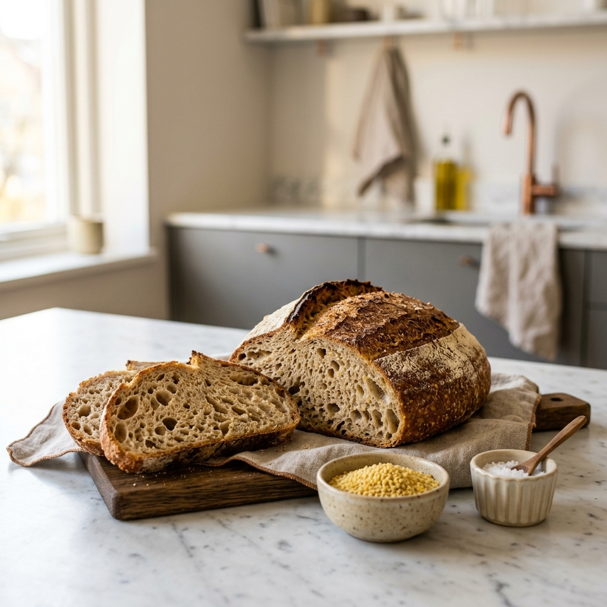

By Subashri M
Proprietor, SNS Global TradersEurope Is Coming for Indian Millets and That Changes Everything
For the longest time, when I spoke to international buyers about where our millets were going, the conversation was mostly about the Middle East and South Asia. UAE, Nepal, Saudi Arabia, and Oman. These are our traditional markets, and they remain very strong.
But something has been shifting over the past year that I think deserves a proper conversation. Europe is no longer a secondary market for Indian millets. It is becoming one of the most serious growth opportunities in the entire export picture right now.
Let me tell you what the data is showing and what it means if you are sourcing or selling in that part of the world.
What is actually happening in Europe
The European millet market was valued at USD 1.77 billion in 2024 and is growing steadily toward USD 2.85 billion by 2033. Those are not small numbers for a market that, ten years ago, barely registered millets as a significant import category.
Germany and France are leading the charge on food-grade millet imports within the EU. Germany in particular has a very well-developed organic food retail infrastructure, and clean-label, gluten-free products are not a niche segment there. They are mainstream shelf items in major supermarket chains. Gluten-free flours made from grains like millet are a key ingredient in the gluten-free products category, which is growing consistently across leading EU markets.

The United Kingdom is another market worth paying attention to. The UK has a sizeable population with Indian roots, which means there are already established brands distributing traditional Indian products including millet and sorghum flours. That existing familiarity with Indian grain products is actually a commercial advantage for exporters like us.
Japan is also moving fast. Japan sustains growth through premium health food retail and consumer demand for ancient grain and gluten-free products, with multi-grain rice blends incorporating millet gaining share in Japanese retail as consumers seek nutritional diversity in their staple grain.
Why this is happening now
The honest answer is that several things came together at the right time.
The UN's International Year of Millets in 2023 created awareness that is still paying off. European food manufacturers who started researching millets during that period are now moving from research to actual procurement. That pipeline takes time to convert, and we are seeing it convert right now in 2026.
At the same time, the European Union's agricultural policies are increasingly prioritising crop diversification and environmental sustainability, which is creating structural tailwinds for millet. When government policy and consumer preference move in the same direction, markets respond.
And then there is the health angle. According to the European Food Safety Authority and other nutrition bodies, millet's low glycemic index and polyphenol content are associated with improved metabolic and cardiovascular markers. European consumers take nutritional science seriously. When established health bodies validate a grain, retailers follow.
What European buyers are actually sourcing it for
From the trade data available right now, European companies are bringing in Indian millets for several distinct purposes.
Bakeries and food manufacturers are reformulating product lines to remove gluten and add ancient grain credentials. Food and beverage manufacturers are expanding millet incorporation into gluten-free product lines as consumer preference for ancient grains strengthens. Breakfast cereal brands across Scandinavia and the Benelux region are launching millet-based products. Organic retailers are stocking whole grain millet as a clean-label staple.
And the snack category is moving particularly fast. In Western markets, Foxtail and Proso millet varieties are driving Ready-to-Eat snack formulations that are expanding at an annual rate of 18 to 22 percent. That kind of growth rate in a single application category is not something food manufacturers ignore for long.
Where India fits into all of this
India is the foundation of global millet supply. India accounts for approximately 40 percent of both global millet production and consumption at 13 million tons, a volume fourfold that of the second-largest player. No other country can match that scale across so many varieties simultaneously.
And the government is actively supporting export growth into exactly these new markets. APEDA has been running buyer-seller meets in Germany, Japan, the UK, the US, and South Korea specifically to open new trade relationships and introduce Indian exporters to international procurement teams.
Algeria and Germany are already showing the fastest growth rates among new markets for Indian millet exports. That trend is not slowing down.
What this means for buyers reading this right now
If you are a food manufacturer, importer, or brand operating in Europe, the UK, or Japan, the window to build a reliable Indian millet supply relationship at a reasonable price point is open right now. As more European buyers enter this market, competition for quality supply from established exporters will increase and so will pricing.
At SNS Global Traders, we export the full range of Indian millets including Finger Millet, Pearl Millet, Foxtail Millet, Kodo Millet, Barnyard Millet, and Browntop Millet. All machine-cleaned, sortex processed, APEDA certified, and packed to your specification whether you need bulk commercial volumes or retail-ready packs.
If Europe is a market you are building for, I would genuinely love to have that conversation.
Reach out through our contact page. We respond to every inquiry personally.